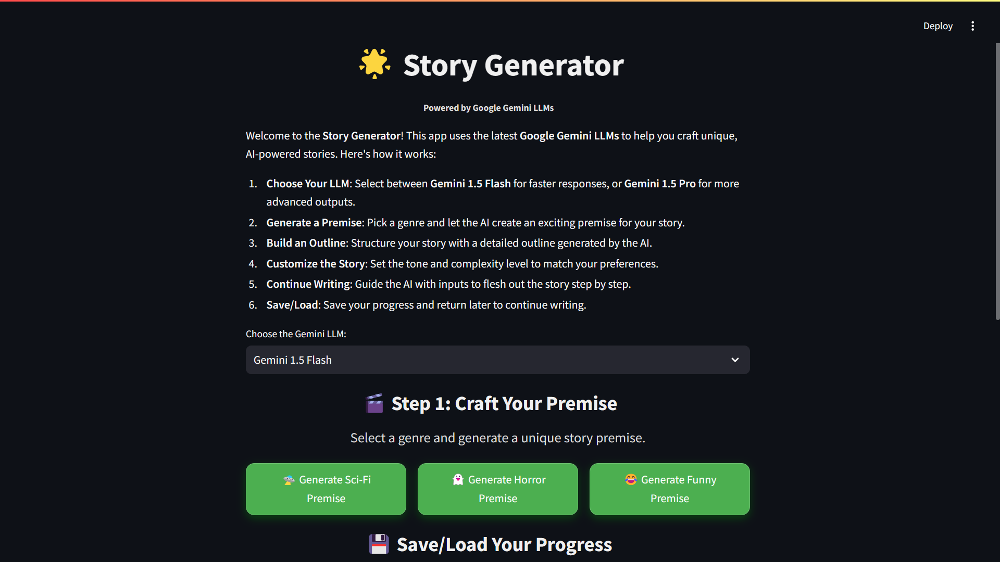
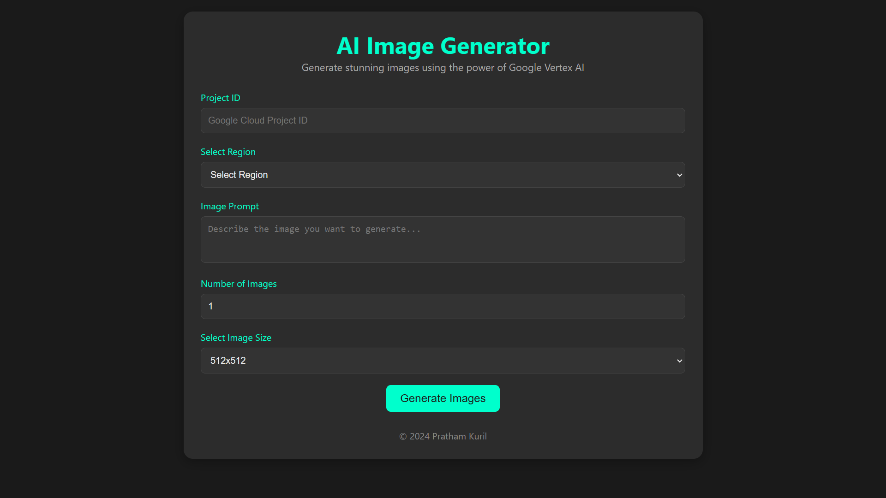
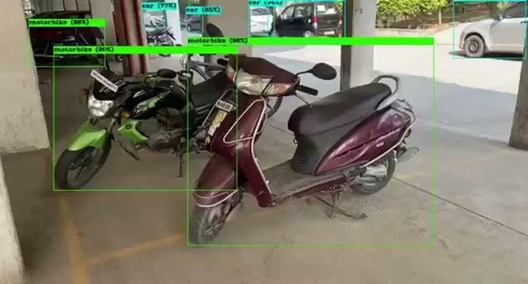
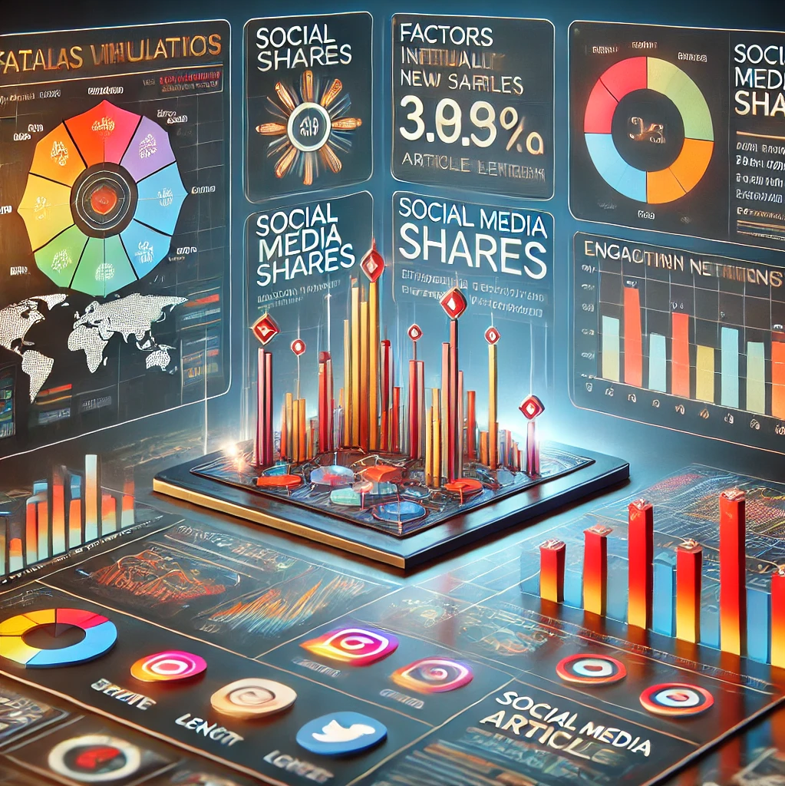
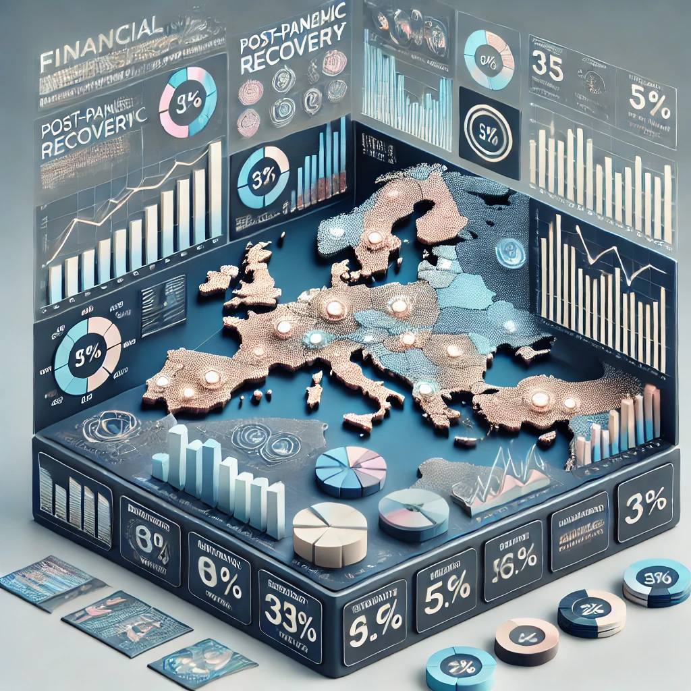

AI AgentLangGraphFastAPIWebSocket
Restaurant Booking Agent
AI booking assistant on Llama3, LangGraph and FastAPI — natural-language conversations, real-time WebSocket chat, intelligent date parsing and a complete booking lifecycle.
From production AI agents and RAG systems to data-engineering pipelines, computer vision and machine-learning research. Filter by domain — every card links straight to the source.
AI booking assistant on Llama3, LangGraph and FastAPI — natural-language conversations, real-time WebSocket chat, intelligent date parsing and a complete booking lifecycle.
Full-stack lead-qualification app: FastAPI + SQLAlchemy backend, React + TypeScript dashboard, event tracking and LLM enrichment of leads with interactive filters and visualizations.

End-to-end AI story-writing app on Gemini 1.5 Pro / Flash — pick genre, tone and complexity, generate premises and outlines, then co-write and save/load stories interactively.

End-to-end Azure data-engineering pipeline on the Netflix dataset — medallion architecture (bronze/silver/gold) with Data Factory, Databricks and Delta Lake.

Custom YOLOv4 detector trained on a self-annotated dataset to classify five vehicle types in Indian traffic — GPU-trained on Colab + Darknet for real-time detection.
Master's thesis — persona-based evaluation and content-gap analysis for AI learning assistants, with cross-model validation and embedding-similarity scoring.

Visual-analytics study of what drives article virality and share metrics — K-means clustering, PCA and advanced visualizations across content channels and weekdays.

Comparative analysis of European industries post-COVID and Brexit — merging financial datasets to explore market cap, EVA and gross profit with correlation heatmaps.
Predictive models (logistic regression, random forest) forecasting company bankruptcy on Taiwan's 1999–2009 economic data — SMOTE, feature selection and interpretability.
Weekly-sales prediction for Walmart stores using Random Forest, Auto-ARIMA and Exponential Smoothing — feature engineering over time- and space-related factors.
Real-time mask detection with a CNN (Keras) and OpenCV — trains on a mask/no-mask dataset and flags mask compliance in a live camera feed.
End-to-end machine-learning project predicting wine quality — a full training and inference pipeline with modular, production-style project structure.
Capstone for the IBM Data Analyst Specialization — data collection, wrangling, exploratory analysis and dashboards over a real-world dataset.